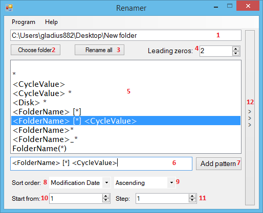

O programie
Program służy to szybkiej i łatwej zmiany nazw plików znajdujących się w folderze. Nazwa dla każdego pliku jest tworzona dynamicznie na podstawie wzoru, który jest uzupełniany podczas działania programu. Wzór może w sobie zawierać zmienne, które są potem interpretowane i zamieniane na odpowiadające im wartości. Pozwala to na nazwanie plików według ustalonego schematu.
Podstawowa obsługa
Do prawidłowego działania program potrzebuje ścieżki do folderu oraz wzoru nazwy pliku. Wszystkie pozostałe opcje mogą pozostać domyślne, jednak aby w pełni wykorzystać możliwości programu wskazanym jest zwrócenie uwagi również na pozostałe ustawienia.
Aby wybrać folder należy wpisać ścieżkę do niego w polu tesktowym oznaczonym jako (1). Nie trzeba jednak robić tego ręcznie - można również skorzystać z przycisku Wybierz foler. Zostanie wówczas otwarte okno dialogowe, w którym można wybrać dowolny folder. Istnieje również możliwość dodania folderu metodą przeciągnij/upuść. Wystarczy przenieść folder do pola tekstowego. Dodatkowo jeśli folder został już kiedyś dodany możliwy jest do niego szybki dostęp poprzez autouzupełnianie. Wystarczy wpisać kilka pierwszych znaków, a lista pasujących podpowiedzi pojawi się automatycznie pod polem tekstowym. Możliwe jest nawigowanie po nim używając zarówno strzałek jak i za pomocą myszy.
W przypadku wzoru nazwy pliku należy kliknąć na jedną z pozycji widocznych na liście. Zostanie wtedy ona użyta do ustalenia nazwy dla każdego następnego pliku. Zalecane jest, aby używać numerów i/lub wartości cyklicznych. Dzięki temu uniknie się sytuacji, w których zostanie podjęta próba zmiany nazwy pliku na taką, jaką posiada aktualnie inny plik.
Konfiguracja
Szablon nazwy pliku
Szablony nazw plików widoczne są na liście oznaczonej jako (5) i są posortowane alfabetycznie. Wartość, która jest zaznaczona będzie brana pod uwagę podczas zmiany nazw plików. Program posiada kilka wbudowanych szablonów, jednak nic nie stoi na przeszkodzie aby dodać własne. Aby tego dokonać należy w pole (6) wpisać szablon. Może on zawierać wszystkie znaki dozwolone w nazwach plików oraz zmienne. Po wypełnieniu pola tekstowego można go dodać poprzez naciśnięcie przycisku Dodaj szablon oznaczonego jako (7).
Aby usunąć dany szablon należy kliknąć na niego prawym przyciskiem myszy oraz z menu kontekstowego wybrać opcję Usuń
Sortowanie
Domyślnie przed zmianą nazwy program sortuje pliki rosnąco według daty modyfikacji. Oznacza to, że zmiana nazwy zacznie się od tego pliku, który został zmodyfikowany jako pierwszy. Nie jest to jednak jedyne opcja. Oprócz sortowania według daty modyfikacji możliwe jest również ułożenie plików według daty utworzenia oraz w porządku alfabetycznym. Również sam porządek sortowania można zmienić z rosnącego na malejące. Aby tego dokonać należy użyć groupy rozwijanych menu oznaczonych jako (8) i (9). Pierwszy odpowiada ze metodą sortowania, a drugi umożliwia ustawienie porządku sortowania.
Numeracja
Każdemu plikowi można przypisać unikalny numer, który będzie dodany do jego nazwy. Domyślnie numeracja zaczyna się od 1, a wartość ta z każdym kolejnym plikiem zwiększa się o 1. Aby numer ten pojawił się w nazwie pliku konieczne jest umieszczenie w szablonie znaku * (gwiazdka). Wartość ta podczas działania programu zostanie automatycznie podmieniona na numer dla każdego pliku.
Wartości cykliczne
Wartości cykliczne są podobnym mechanizmem do numeracji. Jednak o ile numeracja pozwala wstawić kolejną liczbę, o tyle wartości cykliczne umożliwiają wstawienie dowolnej wartości, która dla każdego pliku może być inna.
Czytaj więcej
Interfejs programu
Na interfejs programu składa się kilka elementów, które umożliwiają możliwie najefektywniejsze jego wykorzystanie.

Na powyższym screenie poszczególne elementy interfejsu oznaczone są za pomocą cyfr:
| Lp. | Nazwa |
| 1 | Nazwa folderu |
| 2 | Przycisk umożliwiający wybranie folderu. |
| 3 | Przycisk rozpoczynający zmianę nazw. |
| 4 | Pole umożliwiające ustawienie ilość zer wiodących. |
| 5 | Lista wzorów nazw. |
| 6 | Pole umożliwiające wpisanie własnego wzoru. |
| 7 | Przycisk dodający wzór do listy. |
| 8 | Metoda sortowania |
| 9 | Porządek sortowania. |
| 10 | Początkowy numer. |
| 11 | Liczba dodawana do numeru przy każdym pliku. |
| 12 | Przycisk wysuwający listę z wartościami cyklicznymi. |